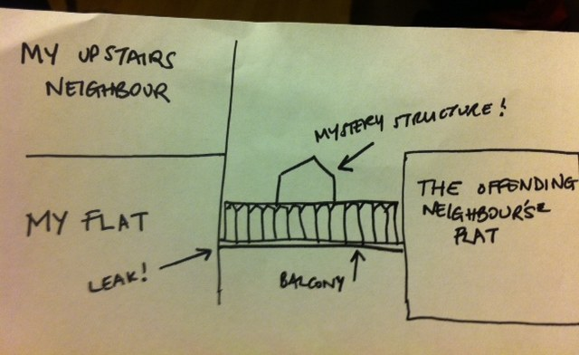
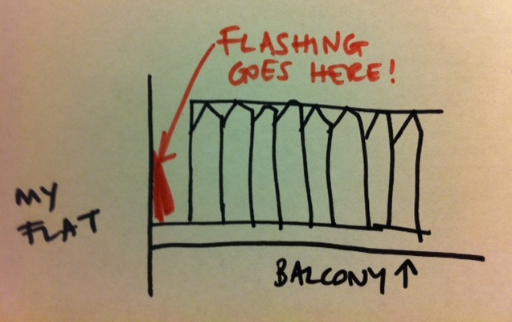
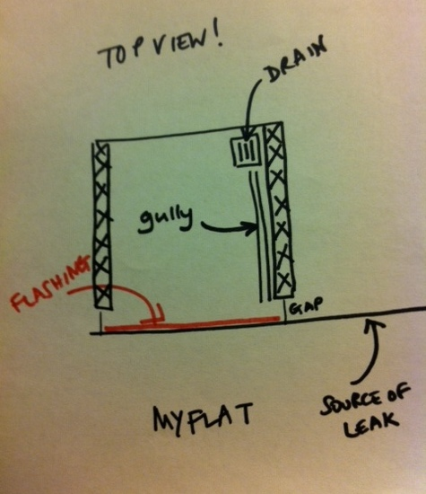
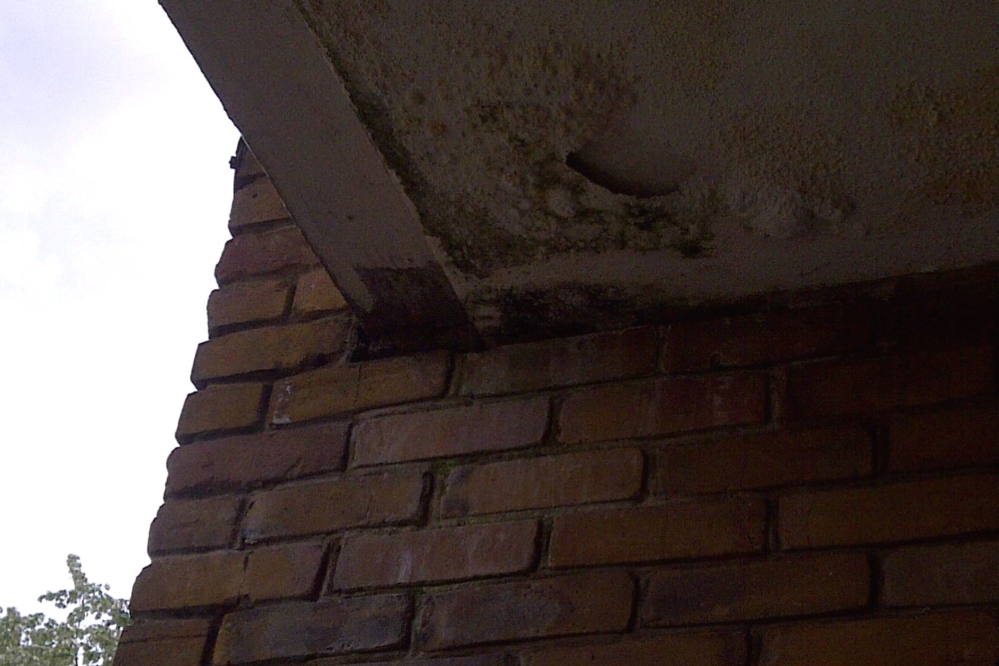
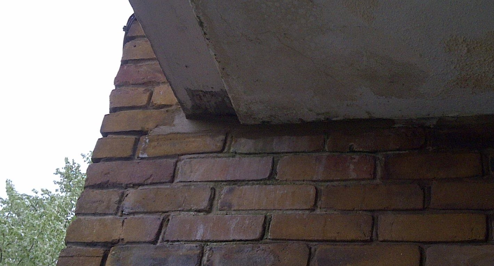

I often find myself viewing life through the lens of software development, a bit like when you play too much Tetris and all your friends turn into shapes. But recent events have made me think: maybe other things actually would be better if they were more like software development?
Recently, I had a leak into my flat. By "recently" I mean it's been ongoing for four and a half months, but that's not what this post is about. This is about applying software development ideas to other fields, instead of the other way around. We talk about "software craftsmanship" – I'm thinking about the opposite, as applied to, for example, roofing.
I first noticed the leak as I was about to go on holiday before Christmas. It rained very heavily, and literally hours before I was due to leave, I saw water bubbling up between the laminate floorboards in the hall. I pulled up the vinyl on the bathroom floor and then took the side of the bath off, and found that my bathroom was about an inch deep in water.
Cut forward a fortnight to when the housing association manage to send out a surveyor to investigate. He tells me what is causing the problem: the flat above and to the right has – without permission – erected some kind of structure on their balcony, and this has caused damage to the brickwork, so when it rains water is seeping into my flat through the holes in their balcony.
At this stage, it's a bit of a mystery to me how that works. And why shouldn't it be? I'm not a roofer. Or a surveyor, or a builder, or an architect. I have only the vaguest notion of how buildings are put together, and I don't think to ask for an explanation of how the water is filling up my flat. Apparently, the Offending Neighbour has drilled a hole to put up the mystery structure, and the hole is the problem. They are going to asphalt over it. And they do so.
All well and good, and the insurance company come round to measure up the flat to fix the damage. Except the day they come to do this, it rains heavily, and once again, I see water bubbling up through the floor in the hall. They have asphalted over the hole in the balcony, but this hasn't fixed the leak!
A builder comes to my flat to discuss it with me. This is where it starts to get interesting. The builder has already looked at the Offending Neighbour's balcony and now he wants to look at my flat. But he can't see how the pieces fit together. Eventually, I have to take him outside to point at the balcony to demonstrate that water coming from the balcony at the point at which it intersects with my flat would lead to damp at exactly the spot we see it, as per the diagram above.
This is when I first start to think of this in terms of a bug. Here is the point at which you need to look at the bigger picture. We're not talking about a bit of mistaken logic in a Ruby program affecting the output of that program. We're talking about a timeout two layers away. The manifestation of the problem is a long way from the cause, and you really need a view of the bigger picture to be able to reason about it.
So the builder goes away, and finally (after calls and emails and threats and complaints) the housing association get back to me and tell me that they are going to put something called flashing on the point at which the wall of my flat meets the wall of ON's balcony. This, they tell me, will definitely fix the problem.
So this makes sense to me. At this point, I've got an idea of the bigger picture, though the details of the water seeping through the brickwork and then somehow bubbling up through the floor are somewhat hazy to me. But I do have one strong opinion at this point: I want to be sure this time that they have really fixed it. At this point, I conceive of the idea of a water test.
You see, when we find a bug in our software, we try and recreate it. Then we know when we've fixed it. And something I was starting to notice here was that this wasn't happening. It was as if I had noticed the timeout, and made a configuration change in the general area, then marked the story as done and walked away. We don't do that, with software. And yet this situation that was making my life pretty inconvenient – three months in, my flat was covered in mould, smelt of damp and all my furniture was in one room while I waited for the leak to be be fixed – was being dealt with by people who seemed to be making general stabs in the direction of the problem, without any kind of theory or analysis.
Of course, I didn't quite realise that – you expect people to be professionals, whatever the job is. But I was sure I wanted them to do a water test.
But getting them to do this was pretty hard, even though it seemed completely obvious to me. What's the problem? Stand on the balcony with a hose, see if the problem is fixed! At one point, I was told it wasn't "feasible". I started to wonder if I was being too idealistic and actually a building was more like a huge legacy codebase where you may not even have access to all the libraries. Maybe I'd just have to accept a best guess instead of a rigorous approach.
Finally, four months in, I managed to persuade them to do it. The head of repairs at the housing association came round to instruct the roofer, but even as he did this he was complaining that the water test was pointless, a waste of time, as it was due to rain today anyway and that would test it. He didn't really grasp the idea that a water test is a controlled test – it's a way to control the input so as to work out whether the output is what you'd expect were your conclusions correct. Rain – apart from being unpredictable – is not controlled. For a start, it rains all over the building at once.
But then the roofer came round, and he was a true software developer.
We went up to the balcony together and he explained to me what he was going to do. Firstly, he was going to hose down on the balcony, not going over the edge. This was to test the flashing.
There is a gap between ON's fence and the wall of my flat. It seemed to me that the gap was too low and my suspicion was that rainwater was overflowing through the gap and thus soaking into my wall.
However, the roofer explained to me that this was the design of the balcony, to prevent flooding. If it rained heavily, the water would flow along the gully and into the drain, and the gap was to prevent the balcony flooding if the rain was too heavy.
However, secondly, he explained, he was going to hose down specifically through the gap and over the side of the wall of my flat so we could see what would happen if the balcony did flood. The reason he was doing these things separately, he told me, was so he could isolate the cause of the problem. If he did both at once, we wouldn't know what the specific problem was.
Yes! Exactly! This is why we don't make the arbitrary configuration change and correct the logic in the Ruby program at the same time, because then how do we know? This man was speaking my language!
The first thing took him about thirty seconds to discover. They turned the hose on the flashing, the water ran down the gully as planned and then – that was it. The drain was completely blocked. It took less than a minute for the balcony to flood and the water to start pouring through the gap and down my wall. Thus demonstrating another benefit of methodical testing – you surface things you might have assumed to be different.
Later, when unblocking it, the roofer told me it must have taken years to get to that state. One might have thought that ON would have reported it at some point in those years. But why would she? She may not even have noticed – presumably she doesn't hang around outside when it's raining. It had not occurred to any of the previous investigators of this problem to check the drain. And while it may seem an obvious thing to have checked, one often overlooks the obvious, and that is why testing is good.
The second thing took this software genius of a roofer a few more minutes to discover. After unblocking the drain, he hosed down the side of the my building and at this point I found that there was water coming in under the bath again. He looked closer at the building and saw, under where the balcony joined my wall, a gap.
Having hosed the wall, he had seen that water ran into that gap and from there, the easiest escape would be into my flat, rather than back out. By attempting to recreate the problem, he identified the solution.
So he unblocked the drain, and he filled in the hole with cement. And then, as if he had not covered himself in glory enough, he told me he was only 95% certain that this would solve the problem, whereas the previous fixes, I had been assured, were the solution. He knows a building is a legacy system. But he has the software methodology approach.
There's more learning here as well – for example, to not assume that you won't understand a problem that isn't in your field – but the main thing I took from it was this: everything would be better if it was a bit more like software development. Craftsmen should be more like software developers.
